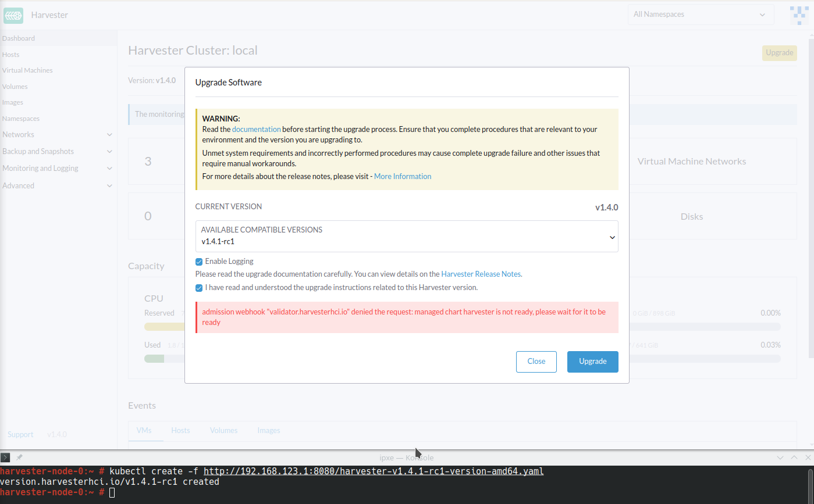
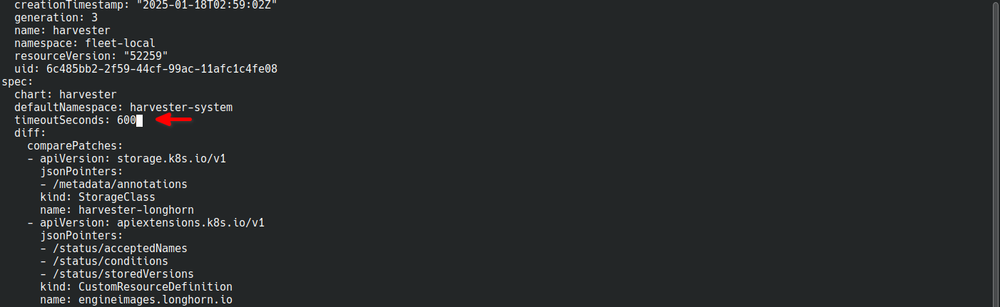

Faça upgrade de v1.4.0 para v1.4.1
Informações gerais
Um botão Upgrade aparece na tela Dashboard sempre que uma nova versão SUSE Virtualization para a qual você pode fazer upgrade se torna disponível. Para mais informações, veja Iniciar um upgrade.
Para ambientes air-gapped, veja Preparar um upgrade air-gapped.
|
Verifique o uso do disco das imagens do sistema operacional em cada nó antes de iniciar o upgrade. Para fazer isso, acesse o nó via SSH e execute o comando Exemplo: Se
|
Atualize a Extensão da UI do Harvester em SUSE Rancher Prime v2.10.1
Você deve usar v1.0.3 da Extensão da UI do Harvester para importar clusters SUSE Virtualization v1.4.1 no Rancher v2.10.1.
-
Na UI do Rancher, vá para local → Apps → Repositórios.
-
Localize o repositório chamado harvester, e então selecione ⋮ → Atualizar.
Este repositório tem as seguintes propriedades:
-
Branch: gh-pages

-
Vá para a tela Extensões.
-
Localize a extensão chamada Harvester, e então clique em Atualizar.
-
Selecione a versão 1.0.3, e então clique em Atualizar.

-
Aguarde um tempo para que a extensão seja atualizada e, em seguida, atualize a tela.
|
A interface do Rancher exibe uma mensagem de erro após a atualização da extensão. A mensagem de erro desaparece quando você atualiza a tela. Esse problema, que existe nas versões Rancher v2.10.0 e v2.10.1, será corrigido na v2.10.2. |
Problemas conhecidos
1. Upgrade preso no estado "Pré-drenado"
O processo de upgrade pode ficar preso no estado "Pré-drenado". O Kubernetes deve drenar a carga de trabalho no nó, mas alguns fatores podem fazer o processo travar.

Uma possível causa são processos relacionados a motores órfãos do Gerenciador de Instâncias Longhorn. Para determinar se isso se aplica à sua situação, execute os seguintes passos:
-
Verifique o nome do pod
instance-managerno nó preso.Exemplo:
O nó preso é
harvester-node-1, e o nome do pod do Gerenciador de Instâncias éinstance-manager-d80e13f520e7b952f4b7593fc1883e2a.$ kubectl get pods -n longhorn-system --field-selector spec.nodeName=harvester-node-1 | grep instance-manager instance-manager-d80e13f520e7b952f4b7593fc1883e2a 1/1 Running 0 3d8h -
Verifique os logs do Longhorn Manager em busca de mensagens informativas.
Exemplo:
$ kubectl -n longhorn-system logs daemonsets/longhorn-manager ... time="2025-01-14T00:00:01Z" level=info msg="Node instance-manager-d80e13f520e7b952f4b7593fc1883e2a is marked unschedulable but removing harvester-node-1 PDB is blocked: some volumes are still attached InstanceEngines count 1 pvc-9ae0e9a5-a630-4f0c-98cc-b14893c74f9e-e-0" func="controller.(*InstanceManagerController).syncInstanceManagerPDB" file="instance_manager_controller.go:823" controller=longhorn-instance-manager node=harvester-node-1O pod
instance-managernão pode ser drenado devido ao motorpvc-9ae0e9a5-a630-4f0c-98cc-b14893c74f9e-e-0. -
Verifique se o motor ainda está em execução no nó preso.
Exemplo:
$ kubectl -n longhorn-system get engines.longhorn.io pvc-9ae0e9a5-a630-4f0c-98cc-b14893c74f9e-e-0 -o jsonpath='{"Current state: "}{.status.currentState}{"\nNode ID: "}{.spec.nodeID}{"\n"}' Current state: stopped Node ID:O problema provavelmente existe se a saída mostrar que o motor não está em execução ou não foi encontrado.
-
Verifique se todos os volumes estão saudáveis.
kubectl get volumes -n longhorn-system -o yaml | yq '.items[] | select(.status.state == "attached")| .status.robustness'Todos os volumes devem estar marcados como
healthy. Se este não for o caso, reporte o problema. -
Remova o PodDisruptionBudget (PDB) do pod
instance-manager.Exemplo:
kubectl delete pdb instance-manager-d80e13f520e7b952f4b7593fc1883e2a -n longhorn-system
2. Fazer upgrade com StorageClass padrão que não é harvester-longhorn
O Harvester adiciona a anotação storageclass.kubernetes.io/is-default-class: "true" a harvester-longhorn, que é o StorageClass padrão original. Quando você substitui harvester-longhorn por outro StorageClass, ocorrem as seguintes situações:
-
O ManagedChart do Harvester exibe a mensagem de erro
cannot patch "harvester-longhorn" with kind StorageClass: admission webhook "validator.harvesterhci.io" denied the request: default storage class %!s(MISSING) already exists, please reset it first. -
O webhook nega o pedido de atualização.

Você pode realizar qualquer uma das seguintes soluções alternativas:
-
Defina
harvester-longhorncomo o StorageClass padrão. -
Adicione
spec.values.storageClass.defaultStorageClass: falseao ManagedChartharvester.kubectl edit managedchart harvester -n fleet-local -
Adicione
timeoutSeconds: 600à especificação do ManagedChart do Harvester.kubectl edit managedchart harvester -n fleet-local
Problema relacionado: #7375
3. Upgrade preso no estado "Aguardando Reinicialização"
O processo de upgrade pode ficar preso no estado "Aguardando Reinicialização" após a imagem do Harvester v1.4.1 ser instalada em um nó e uma reinicialização ser iniciada. Neste ponto, o Upgrade Controller observa se o sistema operacional do Harvester v1.4.1 está em execução.
Se a imagem do Harvester v1.4.1 (daqui em diante referida como active.img) falhar ao inicializar por qualquer motivo, o nó reinicia automaticamente em modo de fallback e inicializa a imagem do Harvester v1.4.0 previamente instalada (daqui em diante referida como passive.img). O Upgrade Controller não consegue detectar o sistema operacional esperado, então o upgrade permanece preso até que um administrador resolva o problema com active.img.
active.img pode se corromper e se tornar não inicializável devido à insuficiência de espaço em disco na partição COS_STATE durante o upgrade. Isso ocorre se o Harvester v1.4.0 foi originalmente instalado no nó e o sistema foi configurado para usar um disco de dados separado. O problema não ocorre nas seguintes situações:
-
O sistema possui um único disco que é compartilhado pelo sistema operacional e pelos dados.
-
Uma versão anterior do Harvester foi instalada originalmente e depois atualizada para a v1.4.0.
Para verificar se o problema existe em seu ambiente, execute os seguintes passos:
-
Acesse o nó via SSH e faça login usando a conta root.
-
Execute os comandos
cat /proc/cmdlineehead -n1 /etc/harvester-release.yaml.Exemplo:
# cat /proc/cmdline BOOT_IMAGE=(loop0)/boot/vmlinuz console=tty1 root=LABEL=COS_STATE cos-img/filename=/cOS/passive.img panic=0 net.ifnames=1 rd.cos.oemlabel=COS_OEM rd.cos.mount=LABEL=COS_OEM:/oem rd.cos.mount=LABEL=COS_PERSISTENT:/usr/local rd.cos.oemtimeout=120 audit=1 audit_backlog_limit=8192 intel_iommu=on amd_iommu=on iommu=pt multipath=off upgrade_failure # head -n1 /etc/harvester-release.yaml harvester: v1.4.0A presença de
cos-img/filename=/cOS/passive.imgeupgrade_failurena saída indica que o sistema inicializou no modo de fallback. A versão do Harvester em/etc/harvester-release.yamlconfirma que o sistema está atualmente usando a imagem v1.4.0. -
Verifique se
active.imgestá corrompido executando o comandofsck.ext2 -nf /run/initramfs/cos-state/cOS/active.img.Exemplo:
# fsck.ext2 -nf /run/initramfs/cos-state/cOS/active.img e2fsck 1.46.4 (18-Aug-2021) Pass 1: Checking inodes, blocks, and sizes Pass 2: Checking directory structure [...a list of various different errors may appear here...] e2fsck: aborted COS_ACTIVE: ********** WARNING: Filesystem still has errors ********** -
Verifique os tamanhos das partições executando o comando
lsblk -o NAME,LABEL,SIZE.Exemplo:
# lsblk -o NAME,LABEL,SIZE NAME LABEL SIZE loop0 COS_ACTIVE 3G sr0 1024M vda 250G ├─vda1 COS_GRUB 64M ├─vda2 COS_OEM 64M ├─vda3 COS_RECOVERY 4G ├─vda4 COS_STATE 8G └─vda5 COS_PERSISTENT 237.9G vdb HARV_LH_DEFAULT 128GA saída no exemplo mostra uma partição
COS_STATEque tem 8G de tamanho. Neste caso específico, que envolve uma tentativa de upgrade malsucedida e umactive.imgcorrompido, a partição provavelmente não tinha espaço livre suficiente para que o upgrade fosse bem-sucedido.
Para corrigir o problema, execute os seguintes passos:
-
Se seu cluster tiver dois ou mais nós, acesse os nós restantes via SSH e verifique o uso do disco de
active.imgepassive.img.# du -sh /run/initramfs/cos-state/cOS/* 1.7G /run/initramfs/cos-state/cOS/active.img 3.1G /run/initramfs/cos-state/cOS/passive.imgSe
passive.imgconsumir 3.1G de espaço em disco, execute os seguintes comandos usando a conta root:# mount -o remount,rw /run/initramfs/cos-state # fallocate --dig-holes /run/initramfs/cos-state/cOS/passive.img # mount -o remount,ro /run/initramfs/cos-statepassive.imgé convertido em um arquivo esparso, que deve consumir apenas 1.7G de espaço em disco (o mesmo queactive.img). Isso garante que os outros nós tenham espaço livre suficiente, evitando que o processo de atualização fique preso novamente. -
Acesse o nó preso via SSH e, em seguida, execute os seguintes comandos usando a conta root:
# mount -o remount,rw /run/initramfs/cos-state # cp /run/initramfs/cos-state/cOS/passive.img \ /run/initramfs/cos-state/cOS/active.img # tune2fs -L COS_ACTIVE /run/initramfs/cos-state/cOS/active.img # mount -o remount,ro /run/initramfs/cos-stateO
passive.imgexistente (limpo) é copiado sobre oactive.imgcorrompido, e o rótulo é definido corretamente. -
Reinicie o nó preso e, em seguida, selecione a primeira entrada (Harvester v1.4.1) na tela de inicialização do GRUB.
A tela de inicialização do GRUB exibe inicialmente Harvester v1.4.1 (fallback) por padrão. Apesar da versão exibida, o sistema inicializa no Harvester v1.4.0.
-
Copie
rootfs.squashfsdo ISO do Harvester v1.4.1 para um local conveniente no nó preso.O ISO pode ser montado tanto no nó travado quanto em outro sistema. Você pode copiar o arquivo usando o comando
scp. -
Acesse o nó preso via SSH e, em seguida, execute os seguintes comandos usando a conta root:
# mkdir /tmp/manual-os-upgrade # mkdir /tmp/manual-os-upgrade/config # mkdir /tmp/manual-os-upgrade/rootfs # mount -o loop rootfs.squashfs /tmp/manual-os-upgrade/rootfs # cat > /tmp/manual-os-upgrade/config/config.yaml <<EOF upgrade: system: size: 3072 EOF # elemental upgrade \ --logfile /tmp/manual-os-upgrade/upgrade.log \ --directory /tmp/manual-os-upgrade/rootfs \ --config-dir /tmp/manual-os-upgrade/config \ --debugVocê deve substituir o caminho de exemplo na quarta linha pelo caminho real do
rootfs.squashfscopiado.Um novo
active.img(limpo) é gerado com base na imagem raiz do ISO do Harvester v1.4.1.Se ocorrerem erros, salve uma cópia do
/tmp/manual-os-upgrade/upgrade.log. -
Execute os seguintes comandos:
# umount /tmp/manual-os-upgrade/rootfs # rebootO nó deve inicializar com sucesso no Harvester v1.4.1, e o upgrade deve prosseguir conforme o esperado.
4. O upgrade reinicia inesperadamente após o botão "Desconsiderar" ser clicado.
Quando você usa Rancher para fazer upgrade de SUSE Virtualization, a interface do usuário Rancher exibe uma caixa de diálogo com um botão rotulado "Desconsiderar". Clicar neste botão pode resultar nos seguintes problemas:
-
A seção
statusdo CRharvesterhci.io/v1beta1/upgradeé limpa, causando a perda de todas as informações importantes sobre a atualização. -
O processo de atualização reinicia inesperadamente.
Esse problema afeta Rancher v2.10.x, que usa v1.0.2, v1.0.3 e v1.0.4 da Extensão da UI do Harvester. Todas as SUSE Virtualization versões da UI não são afetadas. O problema foi corrigido na Extensão da UI do Harvester v1.0.5 e v1.5.0.
Para evitar esse problema, execute uma das seguintes ações:
-
Use a SUSE Virtualization UI para a atualização. Clicar no botão "Desconsiderar" no SUSE Virtualization UI não resulta em comportamento inesperado.
-
Em vez de clicar no botão no Rancher UI, execute o seguinte comando contra o cluster:
kubectl -n harvester-system label upgrades -l harvesterhci.io/latestUpgrade=true harvesterhci.io/read-message=true
Problema relacionado: #7791
5. Máquinas virtuais que usam volumes RWX migráveis reiniciam inesperadamente
Máquinas virtuais que usam volumes RWX migráveis reiniciam inesperadamente quando os pods do plugin CSI são reiniciados. Esse problema afeta SUSE Virtualization v1.4.x, v1.5.0 e v1.5.1.
A solução alternativa é desativar a configuração Excluir Automaticamente o Pod de Trabalho Quando o Volume for Desconectado Inesperadamente na SUSE Storage UI antes de iniciar a atualização. Você deve habilitar a configuração novamente assim que a atualização for concluída.
O problema será corrigido em SUSE Storage v1.8.3, v1.9.1 e versões posteriores. SUSE Virtualization v1.6.0 incluirá SUSE Storage v1.9.1.